生產活動必須結合土地、勞動、資本與企業家精神等生產要素才能進行，生產所創造的成果應由要素提供者共同分享；這種將生產成果分給生產要素提供者的經濟行為，稱為所得分配。
又稱「要素所得分配」，是根據各生產要素在生產過程中的貢獻程度大小（邊際生產力），來決定其所獲得的相對報酬：
以「個人」或「家庭」為衡量對象，不論所得來源為何，統計一國全體個人或家庭在一定期間內所得的多寡與差距程度，用以分析貧富差距與分配均度。
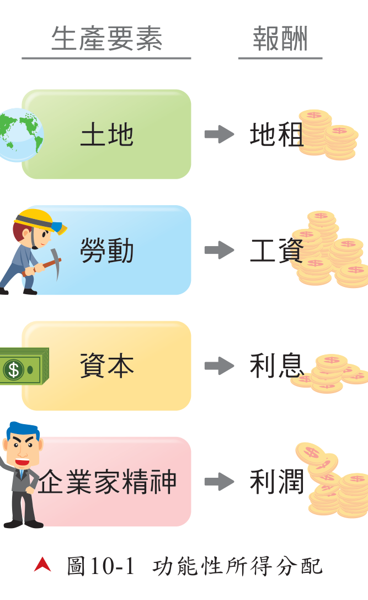
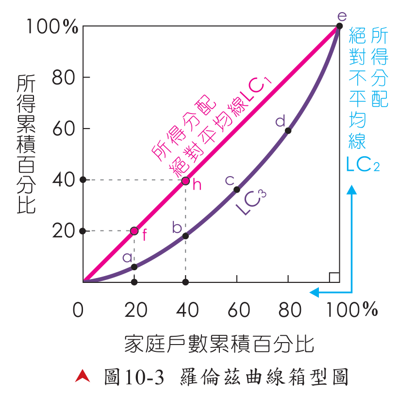
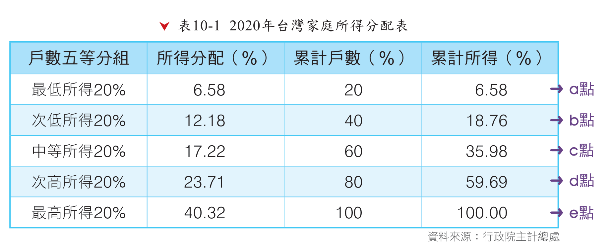
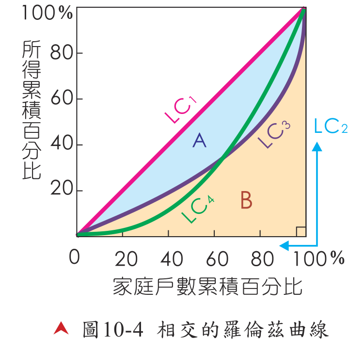
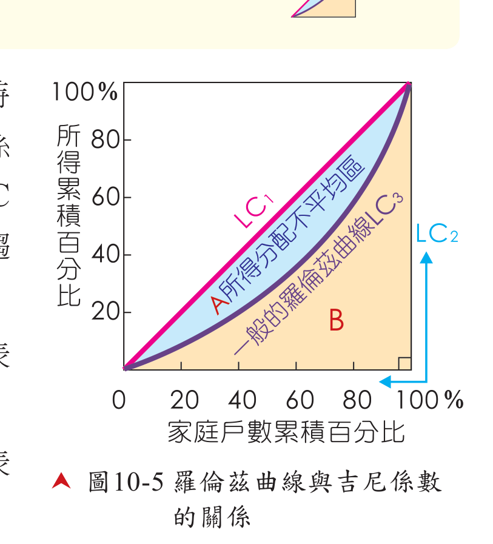
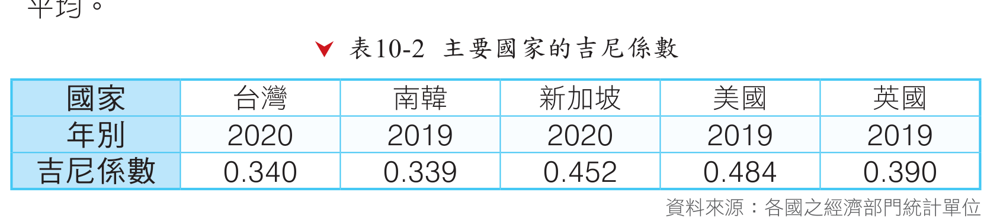
日本趨勢大師大前研一指出：中產階級因實質薪資停滯與物價高漲而逐漸萎縮，少數人向上攀升至富人階級，多數人向下沉淪為新貧族，使社會階層兩極化，人數分布如英文字母 「M」型，中產階級幾近消失。
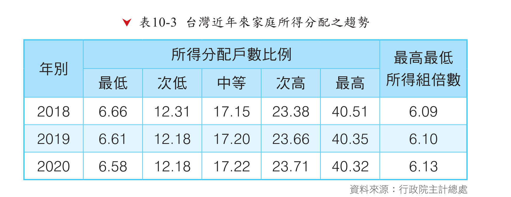
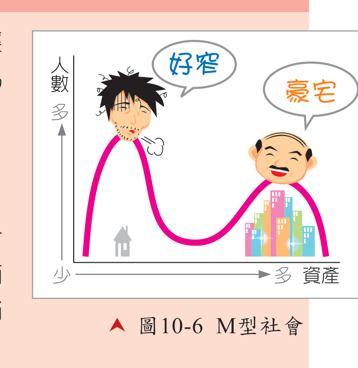
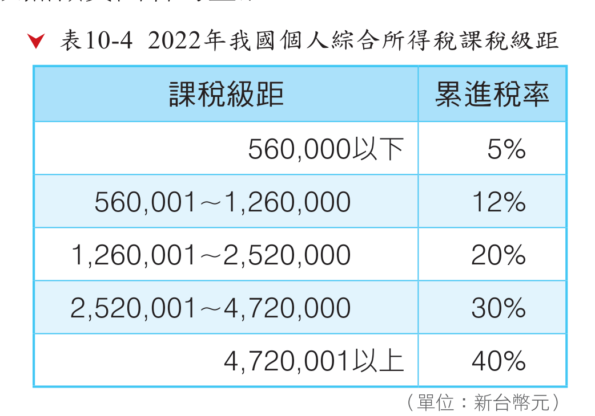
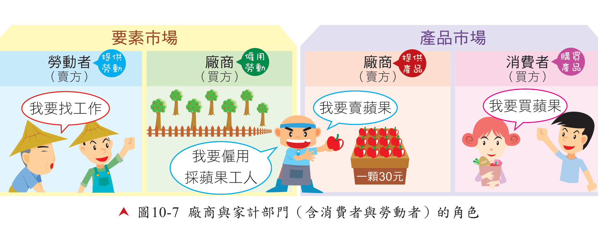
• 產品市場：消費者（家計部門）是買方，廠商是賣方。
• 要素市場：勞動者（家計部門）是賣方，廠商是買方（購買勞力投入生產）！
| 指標名稱 | 代號與定義 | 計算公式 | 完全競爭 vs 不完全競爭產品市場 |
|---|---|---|---|
| 邊際實物產量 | MPL（多僱 1 單位勞動增加的實物產量） | MPL ＝ ΔTPΔL | 純物理數量，與產品市場型態無關 |
| 邊際產值 | VMPL（多僱 1 單位勞動創造的總產出市價價值） | VMPL ＝ PX × MPL |
• 完全競爭產品市場：PX ＝ MRX ➔ VMPL ＝ MRPL（圖 10-9） • 不完全競爭產品市場：PX ＞ MRX ➔ VMPL ＞ MRPL |
| 邊際生產收益 | MRPL（多僱 1 單位勞動為廠商增加的實際邊際收益） | MRPL ＝ MRX × MPL |
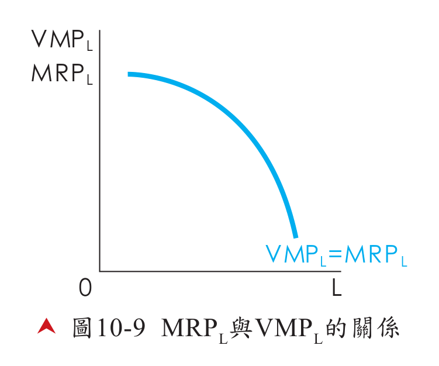
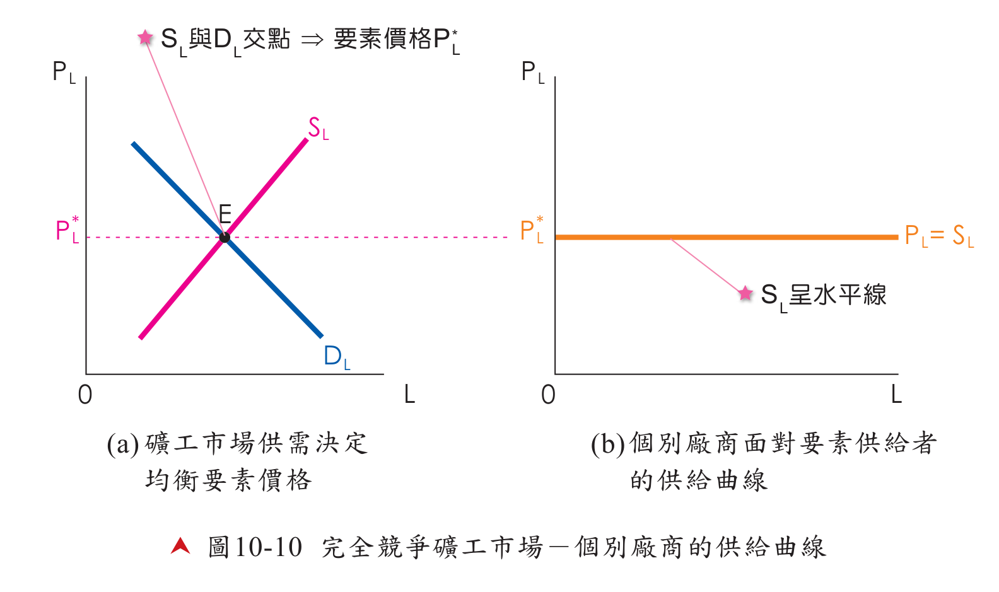
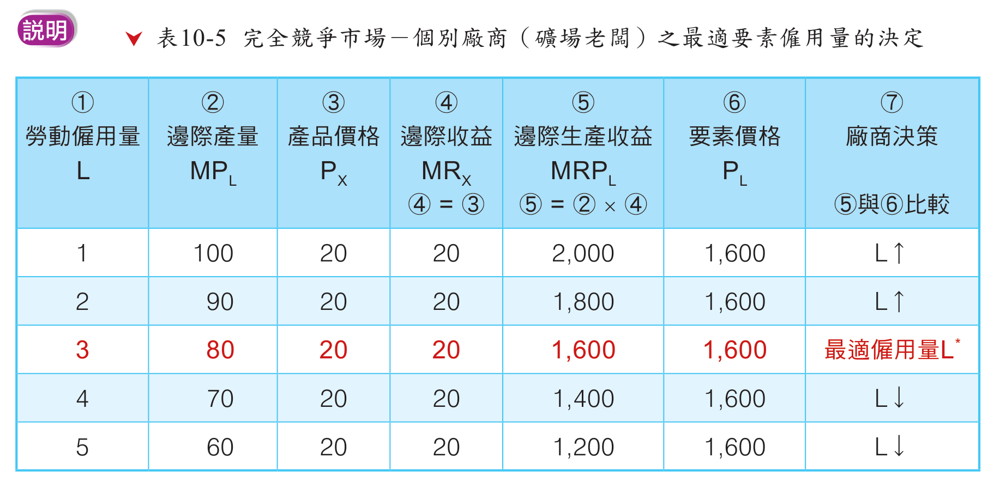
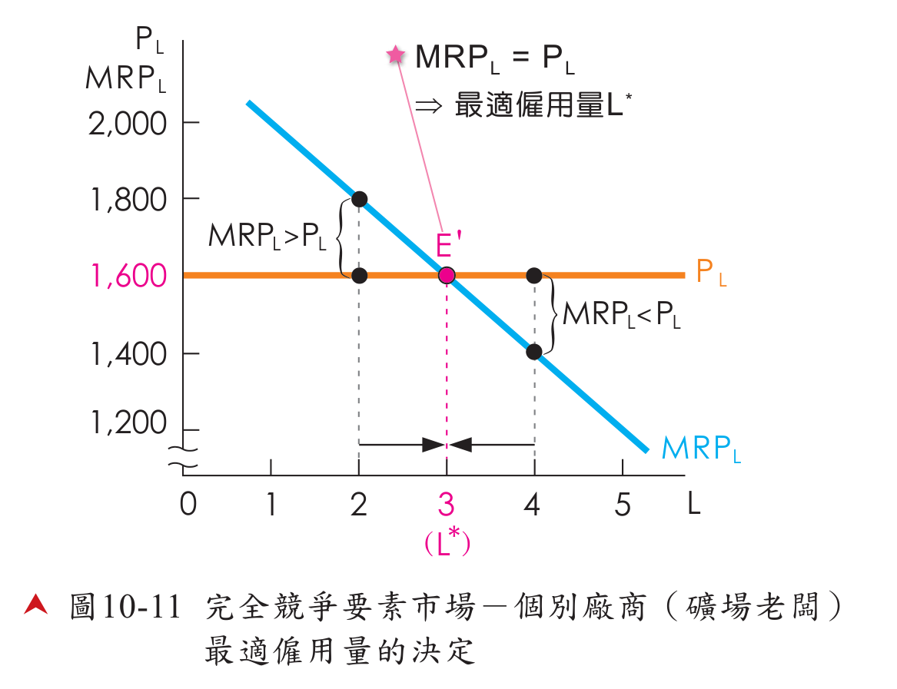
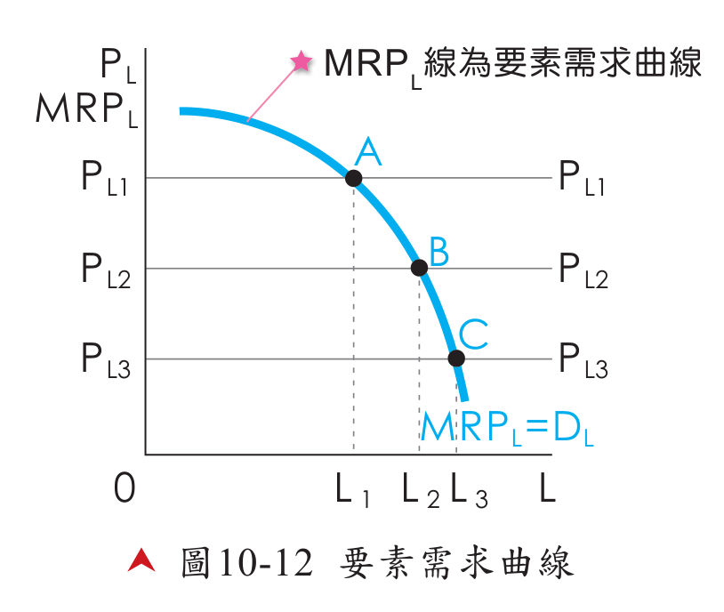
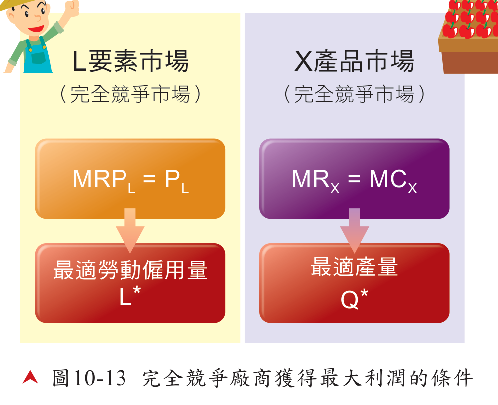
廠商在生產特定產量時，若投入兩種以上生產要素（如勞動 L 與資本 K），為了達到「總生產成本最小」，每一元支出在各要素上所獲得的邊際產量必須相等：
這與第三章消費者均衡的「邊際效用均等法則（MUX/PX ＝ MUY/PY）」在數學結構上完全對稱！
• 消費者追求的是「每一元買到的效用均等」；
• 生產者追求的是「每一元買到的邊際產量均等」！哪邊划算就多買哪邊，直到兩端均等為止！
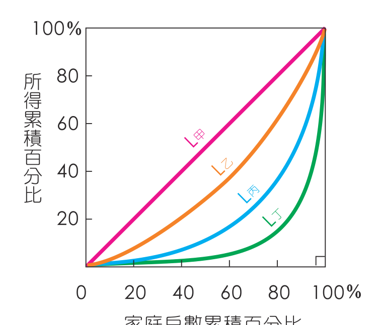